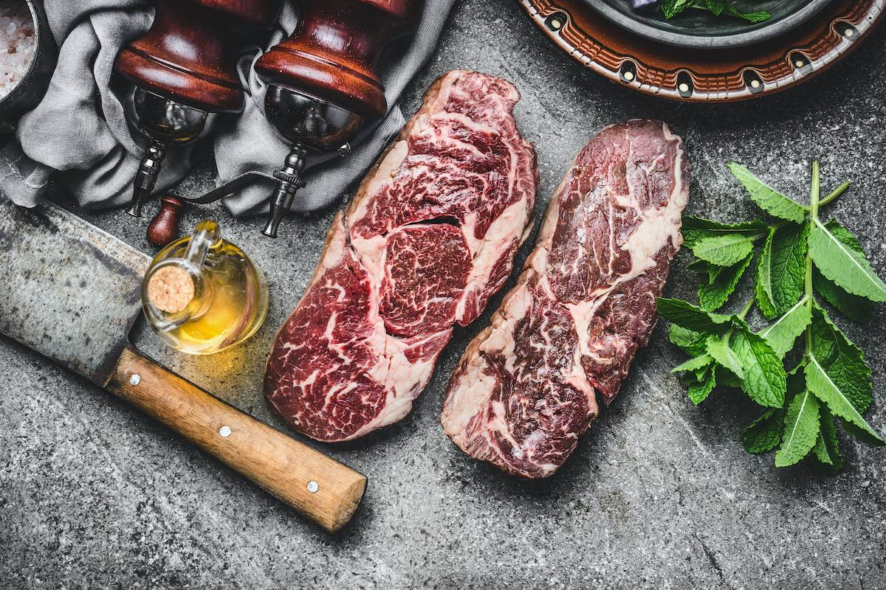
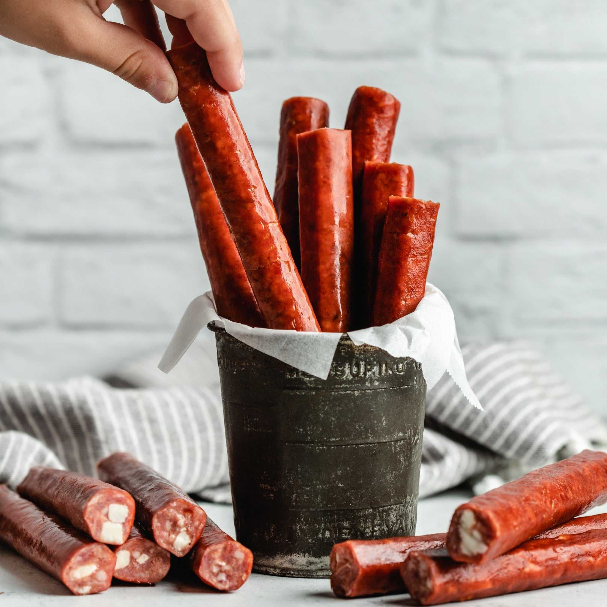

Hand-Cut Meats
Steaks, chops, roasts, and specialty cuts cut fresh in-house every day.
Soft opening Thursday, July 9. 30-day aged steaks, 30+ brat flavors, Wisconsin cheese, and a curated wine and craft beer selection — at 118 Ash Street in Spooner.
What We Carry
Hand-cut in-house, sourced local where we can, and aged with care. Here's what you'll find when we open.
Steaks, chops, roasts, and specialty cuts cut fresh in-house every day.

Premium dry-aged for thirty days for deep, beef-forward flavor.
From classic Wisconsin to our own creations — there's a brat for every taste.

Hand-seasoned and smoked. Stock-up cuts for the cabin, the road, and the tailgate.

Curds, blocks, and specialty cheeses from cheesemakers across the state.

A curated cellar of bottles, six-packs, and locally-made gifts. Pet food and treats too.
Crossroads of the North Meats and Cellar is the work of Jen and Dennis Lutz — a family-owned shop built for a town they love. Spooner sits at the crossroads of Wisconsin's railroad history, lake country, and working farms, and that heritage runs through everything we do: hand-cut meat, house-made brats, and a curated cellar picked with care.
We're putting the finishing touches on 118 Ash Street, right in the heart of downtown. Our plan is simple — bring back the kind of local butcher and corner store where you know who's behind the counter, where the brats are made in-house, and where the cheese and wine were chosen by someone who actually tried them.
Jen and Dennis are committed to being hands-on partners with their team and their community. They can't wait to open the doors and welcome you in.
Steaks, chops, and roasts cut fresh on the block — not pre-packed.
Local farms and cheesemakers whenever we can. Look for the local tag on the shelf.
Jen and Dennis are at the counter, not in a boardroom.

We're hands-on partners with our team and our community. We can't wait to open our doors.
Three Rooms, One Shop
Hand-cut meats behind the counter. Wisconsin cheese on the boards. A cellar curated bottle by bottle. Here's what you'll find when you walk through the door.

01 — The Cellar
Wines chosen for weeknight dinners and special occasions, plus a tight craft-beer shelf. Every label was tasted and approved by Jen & Dennis.

02 — The Apparel Rack
Soft-tees, hoodies, and crewnecks with the Crossroads of the North mark. Designed for the drive home, the cookout, and the cabin weekend.

03 — The Floor
A whiskey-barrel table, rolling racks, and a storefront window that pours in northern-Wisconsin light. The shop is laid out so you can take your time.
Sneak Peek
Shots from around the shop — the coolers, the Cellar, the apparel racks, the products — drifting by as we get ready for soft opening Thursday, July 9. Stop in Thursday and you'll see the rest in person.


Special thanks to Tim, and Shoreline Designs at Two Harbors High School, for the merchandise rack setup.
Now Hiring
Store Manager and Weekly Cleaning Specialist — full job descriptions, schedules, and apply instructions live on the hiring page.
Word of Mouth
Soft opening Thursday, July 9 at 118 Ash Street. Be the first to leave a review on Facebook once you've stopped in.
No reviews yet — we're a brand-new shop. Once we open, we'd love to hear what you think. Drop a note on our Facebook page and help us get started.
Questions
Visit Us
We're right in the heart of downtown Spooner — easy to find, easy to park.
118 Ash Street
Spooner, WI 54801
Opening soon — exact hours to be announced.
The fastest way to reach us right now is Facebook Messenger. We'll be at the counter soon.
Follow us on Facebook for opening day announcements, new brat flavors, and what's on the smoker.